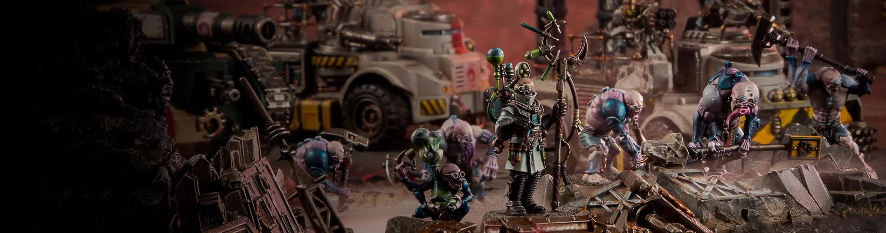

Genestealer Cults
Insurgent citizens who worship the Tyranids as deities from beyond the stars, the Genestealer Cults seek to destroy the Imperium from within.

Insurgent citizens who worship the Tyranids as deities from beyond the stars, the Genestealer Cults seek to destroy the Imperium from within.